Sustitución del eje trasero — Varillaje de suspensión trasera Watt
Herramientas especiales
EN-45059 Medidor de ángulos
Para herramientas regionales equivalentes. Consultar Herramientas especiales .
Procedimiento de desmontaje
- Elevar el vehículo y soportarlo de manera adecuada. Consultar Elevación y soporte en alto del vehículo .
- Desmonte la rueda del vehículo. Consultar Desmontaje y montaje de la rueda y el neumático .
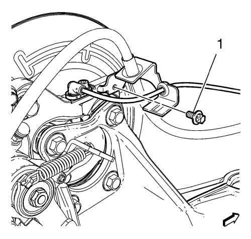
- Desmonte ambos pernos de latiguillo de freno (1) acoplando el tubo flexible al soporte de la pinza del freno trasero.
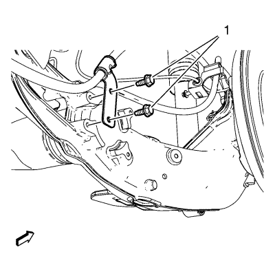
- Desmonte los pernos de soporte de la palanca de freno de mano (1) del eje trasero.
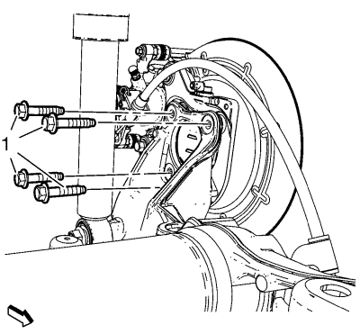
- Desmonte y DESECHE los pernos del cojinete/cubo de la rueda delantera (1).
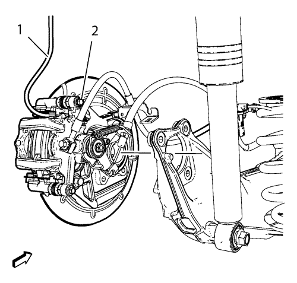
Atención: Sujete las pinzas de freno con alambre mecánico fuerte o equivalente cuando se separen del montaje y aún esté conectado el tubo flexible de freno hidráulico. Si no se sujetan las pinzas de esta manera, el tubo flexible de freno tendrá que soportar el peso de las pinzas, lo que puede provocar que se dañe el tubo flexible de freno y esto, a su vez, puede provocar una fuga de líquido de frenos.
- Sin desconectar el tubo flexible del freno hidráulico, desmonte el conjunto de cojinete/cubo de la rueda y de freno (2) hacia arriba y fíjelo con un cable mecánico resistente (1) o equivalente.
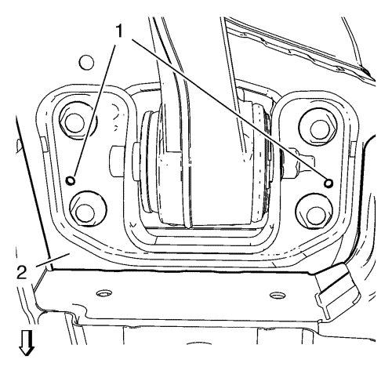
- Usando una broca de 6 mm (0,2 pulg.), taladre 2 orificios (1) a través del soporte derecho del eje trasero y al interior de los bajos. Repita esta operación en el soporte izquierdo del eje trasero. Estos orificios (1) serán usados para pasadores de guía, al objeto de alinear los soportes del eje trasero con los bajos (2).
- Fije el eje trasero con una mesa de elevación hidráulica.
- Retire los tornillos del amortiguador inferior. Consultar Sustitución del amortiguador .
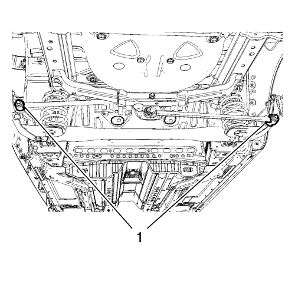
- Retire y DESECHE los tornillos (1) de la varilla del balancín, si está equipado con ellos.
- Baje la mesa de elevación hidráulica y desmonte los muelles helicoidales traseros. Consultar Sustitución de muelles helicoidales .
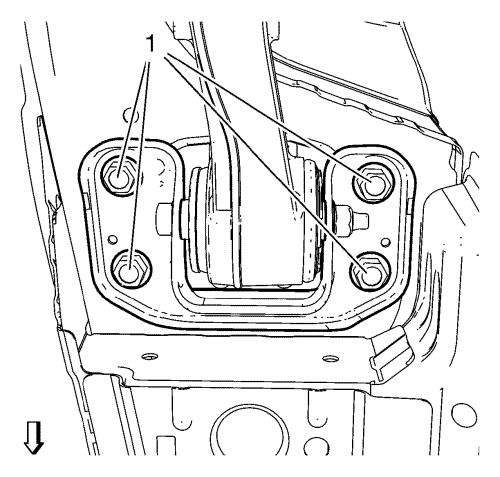
- Desmonte y DESECHE los 8 tornillos de ambos soportes, derecho e izquierdo, del eje trasero (1).
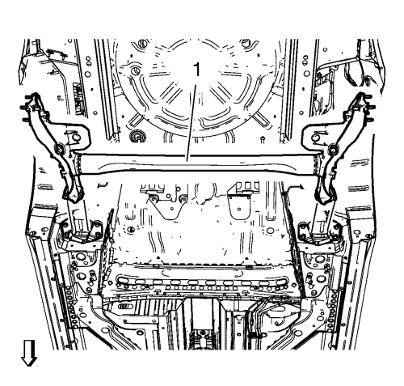
- Utilice la mesa de elevación hidráulica para bajar el eje trasero (1) del vehículo.
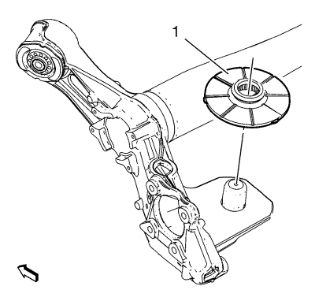
- Desmonte los aislantes del asiento inferior del muelle helicoidal trasero (1) del eje.
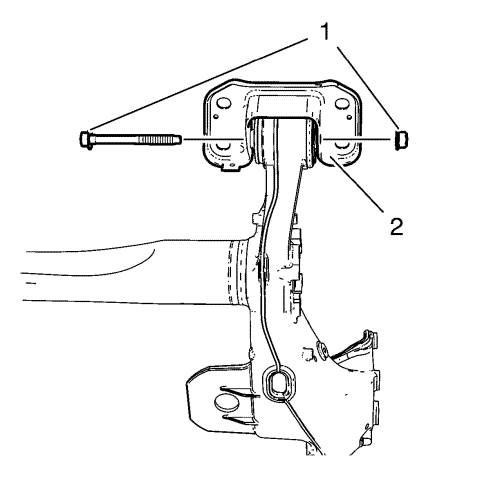
- Desmonte del eje trasero (2) y DESECHE los tornillos y las tuercas del casquillo del eje trasero (1)
Procedimiento de montaje
Nota: Los pernos del casquillo del eje (1) y la conexión de las tuercas se deben apretar con el eje en la altura correcta.
- Monte sin apretar los NUEVOS pernos y tuercas del casquillo del eje trasero (1) en el eje trasero (2).
- Monte los aislantes del asiento inferior del muelle helicoidal trasero (1) al eje.
- Eleve el eje (1) hasta su posición.
- Monte sin apretar los NUEVOS tornillos en ambos soportes, derecho e izquierdo, del eje trasero (1).
- Aplique tratamiento anticorrosivo a los orificios de guía de pasadores en los bajos y en los soportes del eje trasero.
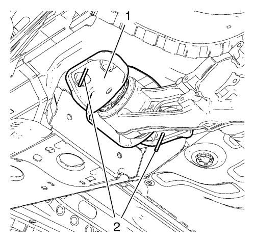
- Utilizando brocas de 6 mm (0,2 pulg.) (2) como pasadores de guía, alinee los soportes derecho e izquierdo del eje trasero con los bajos (1).
Advertencia: Consulte Advertencia de torsión hasta el límite de elasticidad del seguro en la sección Prólogo.
Precaución:Consulte Precaución con las fijaciones en la sección Prólogo.
- Apriete los pernos NUEVOS (1) del soporte del eje y apriételos a 90 N·m (66 lib. pie) + 45°, utilizando el goniómetro EN-45059.
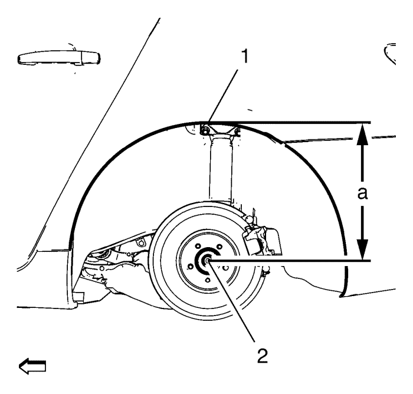
- Utilizando la tabla de elevación, levante el eje a la altura de equilibrio especificada midiendo la distancia vertical (a) entre el centro del cubo de rueda (2) y la parte superior de la abertura de la rueda (1).
Especificación de altura del guarnecido
Dimensión (a): 385 mm (15,16 pulg.)
Advertencia: Consulte Advertencia de torsión hasta el límite de elasticidad del seguro en la sección Prólogo.
- Apriete los pernos pasantes (1) y tuercas NUEVAS del eje y apriételos a 70 N·m (52 lib. pie) + 120°, utilizando el goniómetro EN-45059.
- Monte los muelles helicoidales traseros. Consultar Sustitución de muelles helicoidales .
- Coloque los pernos del amortiguador inferior. Consultar Sustitución del amortiguador .
- Monte los tornillos de la varilla del balancín (1) y apriételos a 160 N·m (118lib. pie), si está equipado con ellos.
- Desmonte la mesa de elevación hidráulica del eje trasero.
- Monte el conjunto de cojinete/cubo y freno.
- Monte los NUEVOS pernos de montaje del cojinete/cubo de la rueda (1) y apriételos a 50 N·m (37 lib. pie).
- Monte los pernos traseros del soporte de la palanca del freno de estacionamiento (1) en el eje trasero y apriete a 10 N·m (89 lib. pulg.).
- Coloque ambos pernos de latiguillo de freno (1) acoplando el tubo flexible al soporte de la pinza del freno trasero y apriételos.
- Monte el conjunto de neumático y llanta. Consultar Desmontaje y montaje de la rueda y el neumático .
- Desmonte el soporte y baje el vehículo.
| © Copyright Chevrolet. Reservados todos los derechos |